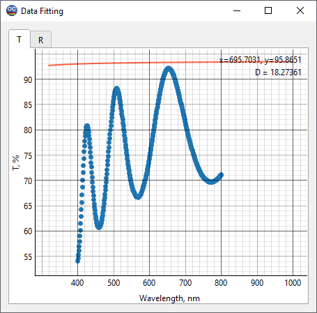
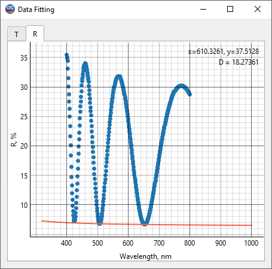
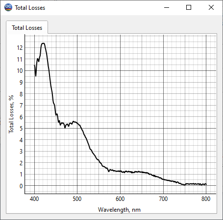
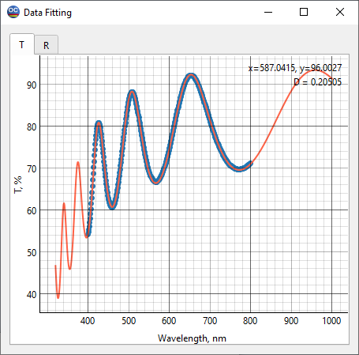
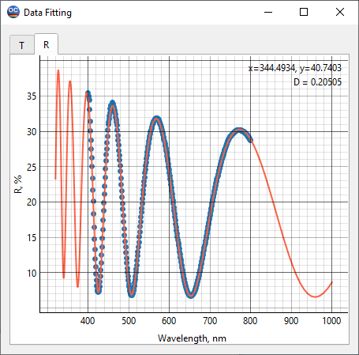
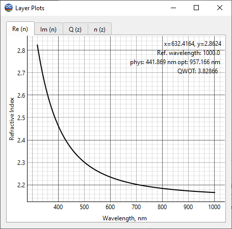
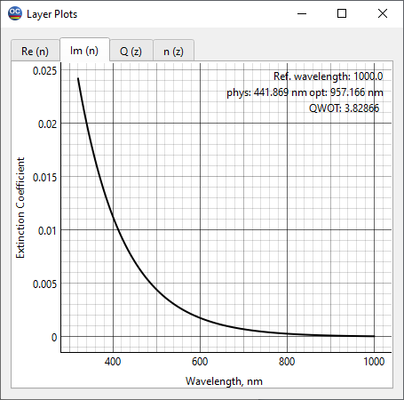
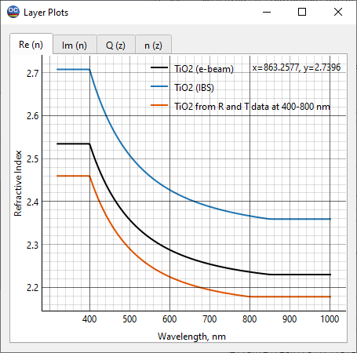

LEC24C3 – Characterization of a dielectric film with small absorption losses
Note For introduction to the basics of characterization theory, we recommend the book by A. Tikhonravov, Optical coatings: design, characterization, monitoring, SPIE Press, 2024
The main purpose of this example is to demonstrate the determination of the refractive index and extinction coefficient of a thin film with small absorption losses. TiO2 film on the Supracil substrate is used as an example.
In the File -> Project menu of OptiChar, open the directory LEC24C3. The datafiles needed to run this exercise are already loaded into RAM. These are the Supracil substrate and the measurement datafile TiO2 R and T data at 400-800 nm. Open the Data Fitting option in the View menu. The dots in the T and R tabs of this window show the measured transmittance and reflectance data, respectively. The solid curves in these tabs represent the transmittance and reflectance from the uncoated BK7 substrate. The substrate thickness is specified in the Substrate thickness line of the General Information window.
 
As in the previous examples, we start by analyzing the correspondence between the measured data and the R and T of the uncoated substrate. In the case of a homogeneous film with a refractive index higher than that of the uncoated substrate, the measured reflectance minima should match the reflectance of the uncoated substrate. In the R tab of the Data Fitting window, we see a perfect match between these minima and the substrate reflectance. This fact indicates that the film is homogeneous.
Let us now check the fit in the T tab of the Data Fitting window. We see that all transmittance maxima are shifted downwards relative to the transmittance of the uncoated substrate. But the wavelength dependence of these shifts is not typical for shifts caused by film inhomogeneity, which are almost the same for all wavelength positions of the transmittance maxima. On the contrary, the observed shifts are typical for shifts associated with absorption in the film. The latter usually increase at shorter wavelengths, where absorption increases. Thus, the observed downward shift of the transmittance maxima from the substrate transmittance should be attributed to the absorption of the film.
Based on the above considerations, we must conclude that it is necessary to use a model of a homogenous film that has some absorption. But before finally choosing a thin film model, let us perform one more useful experiment. Let us go to the Total losses option in the View menu. This option displays the wavelength dependence of the difference 100% - R% -T%, where R and T are the measured reflectance and transmittance data. In principle, to calculate the total losses in the studied film, it is necessary to have R and T data measured at the same angle of incidence. However, it is typical for spectrophotometers in use today to measure these data at slightly different angles, which are usually zero for T and a few degrees for R. Since the difference between R (or T) values measured at incidence angles differing by a few degrees is not very significant, the Total losses option allows using T and R data measured at slightly different angles.

In our case, the R data was measured at 8 degrees of incidence, and the T data was measured at normal incidence. This difference in incidence angles causes small fluctuations in the total losses plot displayed, which is not significant for the main conclusion that follows from analyzing this plot. This conclusion is that the film is absorbing, with the typical exponential decrease in absorption from the UV to Visible spectral range for dielectric films.
Now we are ready to use the Layer Characterization option in the Characterization menu. Let us select the Normal Dispersion (three-parameter Cauchy model) for the refractive index and UV-VIS model for the extinction coefficient. Click OK to start the characterization procedure. The results displayed in the Data Fitting window show an excellent agreement between the model and measured data.
 
The found wavelength dependencies of the refractive index and extinction coefficient can be seen in the corresponding tabs of the Layer Plots window. They are saved in the Layer material database under the name TiO2 from R and T data at 400-800 nm.
 
At the end of this exercise, let us verify the found TiO2 refractive index wavelength dependence versus well-established TiO2 refractive index dependencies. In the Layer material database, there are two such dependencies from the paper by A. Tikhonravov et al., Optical parameters of oxide films typically used in optical coating production. Appl. Opt., 2011, vol. 50, no. 9, pp. C75-C85. These are datafiles TiO2 (IBS) and TiO2 (e-beam) that were obtained for the films produced using IBS and e-beam evaporation processes.
Select the Compare Index Plots option from the View menu. From physical considerations, one would only expect an upward or downward shift in the refractive index wavelength dependencies due to the difference in density of thin films of the same material obtained under different deposition conditions. That is what we see in the comparison window. This gives us confidence in the correctness of the results obtained.
